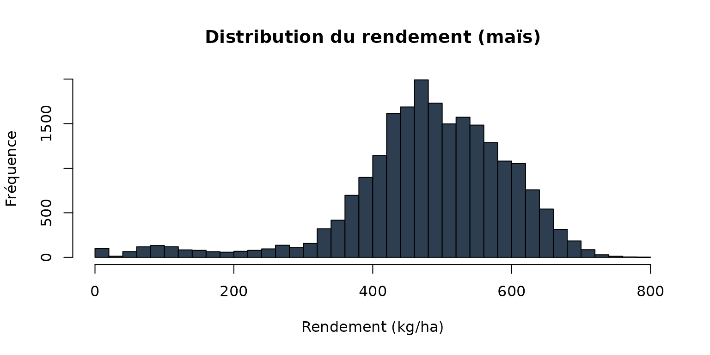

Nettoyage des Données de Rendement
Source:vignettes/nettoyage_donnees_rendement.Rmd
nettoyage_donnees_rendement.RmdIntroduction
Le package yieldcleanr fournit des outils pour nettoyer, filtrer et valider les données de rendement collectées par les moissonneuses-batteuses. Il implémente les méthodes de filtrage documentées dans le Yield Editor d’USDA (AYCE - Auto Yield Cleaning Engine).
Données d’exemple
Le package inclut plusieurs fichiers de données d’exemple dans le
répertoire inst/extdata/:
| Fichier | Lignes | Culture |
|---|---|---|
sample2.txt |
12,940 | Maïs |
sample1.txt |
21,917 | Soja |
sample3.txt |
31,815 | Maïs |
sample4.txt |
19,495 | Maïs blanc |
Pour utiliser ces fichiers:
# Chemin vers les fichiers d'exemple
file_path <- system.file("extdata", "sample1.txt", package = "yieldcleanr")
# Lecture des données
data_raw <- read_yield_data(file_path)
#> Distance detectee en pouces (moyenne: 53.6 ) - conversion en metres
#> Swath detecte en pouces (moyenne: 288 ) - conversion en metres
# Aperçu
cat("Données brutes:\n")
#> Données brutes:
cat(" Lignes:", nrow(data_raw), "\n")
#> Lignes: 21917
cat(" Flow moyen:", round(mean(data_raw$Flow), 2), "lbs/sec\n")
#> Flow moyen: 7.64 lbs/sec
cat(" HeaderStatus unique:", paste(unique(data_raw$HeaderStatus), collapse=", "), "\n")
#> HeaderStatus unique: 1, 0Format des données d’entrée
Le package attend des fichiers texte avec les colonnes suivantes:
| Colonne | Description |
|---|---|
| Longitude | Degrés décimaux, WGS 84 |
| Latitude | Degrés décimaux, WGS 84 |
| Flow | Flux de grain (LBS/Sec) |
| GPS_Time | Secondes depuis le début GPS |
| Interval | Intervalle d’enregistrement (sec) |
| Distance | Distance parcourue (pouces) |
| Swath | Largeur de coupe (pouces) |
| Moisture | Humidité (%) |
| HeaderStatus | 1=UP, 33=DOWN (actif) |
| Pass | Numéro de passage |
| Serial | Numéro de série |
| FieldID | Identifiant du champ |
| LoadID | Identifiant de la charge |
| GrainType | Type de grain |
| GPSStatus | Statut GPS |
| DOP | Dilution of Precision |
| Altitude | Altitude (pieds) |
Pipeline AYCE
Utilisation simple avec ayce_clean()
La fonction ayce_clean() applique le pipeline de
nettoyage complet. Voici un exemple utilisant les données incluses dans
le package:
# Charger les données d'exemple
file_path <- system.file("extdata", "sample1.txt", package = "yieldcleanr")
data_raw <- read_yield_data(file_path)
#> Distance detectee en pouces (moyenne: 53.6 ) - conversion en metres
#> Swath detecte en pouces (moyenne: 288 ) - conversion en metres
# Appliquer les étapes de nettoyage manuellement pour l'exemple
data_utm <- latlon_to_utm(data_raw)
#> Zone UTM detectee: 15
data_utm <- convert_flow_to_yield(data_utm)
#> Yield calcule: 81059 bu/acre (lbs/bu = 60 )
# Appliquer PCDI
pcdi_result <- apply_pcdi(data_utm, delay_range = 0:15, n_iterations = 5)
#> === PCDI: Phase Correlation Delay Identification ( Flow ) ===
#> Delai optimal ( Flow ): 0 secondes
#> RSC a l'optimal : 0.2829
#> Stabilite (CV) : 0.001
# Calculer les seuils automatiques
thresholds <- calculate_auto_thresholds(data_utm)
#> === Automatic Threshold Calculation (AYCE) ===
#> Yield: Yield_buacre MIN = 0 MAX = 192321.25
#> Velocity: MIN = 0.5 MAX = 2.89
#> Position: X[ 477042 - 477999 ]
#> Position: Y[ 4349680 - 4350386 ]
# Filtrer par vélocité
data_clean <- filter_velocity(data_utm, thresholds$min_velocity, thresholds$max_velocity)
#> Velocity filter: 29 points elimines (vitesse hors plage: 0.5 - 2.88864430393987
#> )
# Filtrer par plage de rendement
data_clean <- filter_yield_range(data_clean, thresholds$min_yield, thresholds$max_yield)
#> Yield range filter: 2 points elimines (rendement hors plage: 0 - 192321.2 )
# Résultat
cat("Nettoyage complet:\n")
#> Nettoyage complet:
cat(" Lignes brutes:", nrow(data_raw), "\n")
#> Lignes brutes: 21917
cat(" Lignes nettoyées:", nrow(data_clean), "\n")
#> Lignes nettoyées: 21874
cat(" Taux de rétention:", round(nrow(data_clean)/nrow(data_raw)*100, 1), "%\n")
#> Taux de rétention: 99.8 %
cat(" Flow moyen:", round(mean(data_clean$Flow), 1), "bu/acre\n")
#> Flow moyen: 7.7 bu/acreSupport des deux formats HeaderStatus
Le package accepte les deux formats de HeaderStatus: - 1 = Harvesting actif - 33 = Header abaissé (actif)
Les deux valeurs sont maintenant reconnues comme indiquant une récolte active.
Export des résultats
# Export en CSV avec ayce_clean()
cleaned <- ayce_clean(
file_path = system.file("extdata", "sample1.txt", package = "yieldcleanr"),
output_file = "rendement_nettoye.csv",
log_file = "nettoyage_log.txt"
)Sortie SF avec polygones
Pour une sortie géographique avec polygones:
# Création d'un objet SF avec polygones orientés
sf_data <- ayce_sf(
file_path = system.file("extdata", "sample1.txt", package = "yieldcleanr"),
geometry_type = "polygon"
)
# Visualisation
plot(sf_data["Yield_kg_ha"], main = "Rendement (kg/ha)")Paramètres configurables
La fonction ayce_clean() accepte les paramètres
suivants:
| Paramètre | Description | Valeur par défaut |
|---|---|---|
delay_range |
Plage de délais à tester | 0:25 |
n_iterations |
Itérations PCDI | 10 |
cellsize_overlap |
Taille cellule overlap (m) | 0.3 |
overlap_threshold |
Seuil overlap (%) | 50 |
n_swaths |
Fenêtre STD local (swaths) | 5 |
lsd_limit |
Limite STD local (×SD) | 3 |
Exemple complet avec visualisation
# Charger les données
file_path <- system.file("extdata", "sample1.txt", package = "yieldcleanr")
data <- read_yield_data(file_path)
# Appliquer le nettoyage manuellement pour l'exemple
data_utm <- latlon_to_utm(data)
data_utm <- convert_flow_to_yield(data_utm)
pcdi_result <- apply_pcdi(data_utm, delay_range = 0:15, n_iterations = 5)
thresholds <- calculate_auto_thresholds(data_utm)
data_clean <- filter_velocity(data_utm, thresholds$min_velocity, thresholds$max_velocity)
data_clean <- filter_yield_range(data_clean, thresholds$min_yield, thresholds$max_yield)
data_clean <- data_clean[!is.infinite(data_clean$Flow), ]
# Convertir en kg/ha (1 bu/acre = 62.77 kg/ha pour maïs à 15.5% humidité)
data_clean$Yield_kg_ha <- data_clean$Flow * 62.77
# Histogramme du rendement
hist(data_clean$Yield_kg_ha, breaks = 40, col = "#2C3E50", alpha = 0.7,
main = "Distribution du rendement (maïs)",
xlab = "Rendement (kg/ha)", ylab = "Fréquence")
Fichier de log
Le fichier de log généré contient toutes les informations sur le traitement:
=======================================================
AYCE - AUTO YIELD CLEANING ENGINE
Log file generated by yieldcleanr
=======================================================
Date: 2026-01-19
Source file: sample1.txt
--- SUMMARY ---
Original points: 12940
Cleaned points: 11713
Points removed: 1227 (9.5%)
Retention rate: 90.5%
--- STATISTICS (bu/acre) ---
Raw: Mean=153.1 SD=41.3 CV=27.0 N=12940
Clean: Mean=157.1 SD=28.9 CV=18.4 N=11713
=======================================================Résumé
Le package yieldcleanr permet de:
- Lire les données brutes de moissonneuse
- Nettoyer automatiquement les données avec AYCE
- Convertir en système métrique (kg/ha)
- Exporter en CSV ou GeoJSON (SF)
- Générer des logs détaillés
Pour plus d’informations, voir la vignette
donnees_exemple.Rmd qui documente les fichiers de données
inclus.